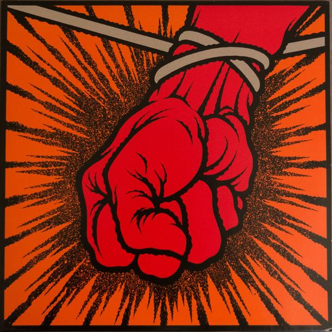

Grammy-díjas müvek

One
A Metallica első Grammy-díját elnyerő dala, amely a zenekar egyik legismertebb klasszikusává vált.
Megtekintés
Stone Cold Crazy
A Queen legendás dalának Metallica-feldolgozása, amely Grammy-díjat nyert a zenekarnak.
Megtekintés
Better Than You
A Reload album egyik legismertebb dala, amely Grammy-díjjal gazdagította a zenekart.
Megtekintés
Whiskey in the Jar
A Thin Lizzy klasszikusának feldolgozása, amely a rajongók egyik nagy kedvence lett.
Megtekintés
St. Anger
A megosztó, mégis sikeres album címadó dala, amely Grammy-díjat nyert 2004-ben.
Megtekintés
Death Magnetic
A Metallica nagy visszatérésének számító album, amely több Grammy-díjat is eredményezett.
Megtekintés